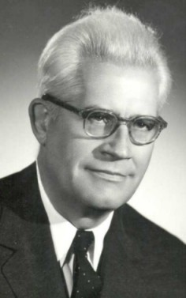

A CSFK Földtani és Geokémiai Intézetének több, mint fél évszázados története

Elemér Szádeczky Kardoss,
founder of the Laboratory for Geochemical Research
In 1950, within the Department of Mineralogy and Petrology of the Eötvös University, Budapest, a research team of small but well-sponsored staff was created under the guidance of the Hungarian Academy of Sciences (HAS) in order to develop geochemical research in Hungary. On the first of January, 1955, the Laboratory for Geochemical Research of the HAS was founded joining the independent Department of Petrology and Geochemistry both institutions headed by Elemér Szádeczky-Kardoss, member of the Academy, in the building of the Eötvös University at Múzeum krt. 4/a, Budapest.
Subsequently to a smaller regression in 1956, in the next 20 years the Laboratory underwent a high-speed extensive development, similarly to other research institutions of the HAS. Under the direction of academician Elemér Szádeczky-Kardoss in 1974 the staff swelled to 26 persons, including 15 researchers, and the Laboratory possessed an at that time modern instrument assemblage and a many-sided research field.
Since the first of January, 1975, due to the concentration efforts of the HAS the Laboratory became a member of the Research Laboratories for Natural Sciences of the HAS consisting five institutions but preserving their independence in the field of research and human politics. The residence building was the Research Center of HAS at Budapest, XI., Budaörsi út 45. György Pantó became the director who managed the Laboratory up to the end of 1999. In harmony with the requirements of that period, in addition to the basic reseaches the study of applied sciences and practical requirements turned to be an important factor. In addition to the study of former research directions new ones were initiated that allowed to join the international trends (e.g. geochemistry of REE, microstructural research of mica structures and clay minerals aiming at petrogenetic and tectonic evolution purposes, application of biomarkers in hydrocarbon genesis, study of environmental geochemistry, later the isotope geochemistry, etc.). Accordingly, the aged instruments were replaced by new ones and a modern new instrument (mass spectrometer) was purchased. This evolution has been realized by the large-scale development of international relations and wide cooperation with the Hungarian industrial research.
Meanwhile, the director of the Laboratory, György Pantó was elected first to be corresponding (1990), than ordinary member of the Academy (1995), while Péter Árkai was elected as corresponding member of the HAS (1998). Recently in the Laboratory there are one doctor of science, 5 candidates of science, one researcher with PhD degrees and one with university doctoral title. One-third of the staff is young, i.e. younger than 30 years.
As a result of the consolidation of the HAS, the former Research Laboratories for Natural Sciences were wound up on the first of January 1998 and simultaneously the Research Center for Earth Sciences of the HAS was founded in which the Laboratory for Geochemical Research worked together with two other institutions, but independently of them as regards the scientific management and financial activity. The residence of the Laboratory for Geochemical Research remained unchanged, i.e. H-1112 Budapest, Budaörsi út 45. The director of the Laboratory was Péter Árkai, ordinary member of the HAS, while academician György Pantó became the general director of the Research Center who coordinated the joint affairs together with the Director's Council. From January 1, 2005 the Laboratory works as Institute for Geochemical Research. The former Research Centre has changed to the more informal Association of Earth Science Institutes, whose chairman was Péter Árkai between 2005 and 2007. From January 1, 2008, the director of the Institute for Geochemical Research is Attila Demény.
From January 1st, 2012, the Institute is operating in the Research Centre for Astronomy and Earth Sciences (within the Eötvös Loránd Research Network) as Institute for Geological and Geochemical Research.